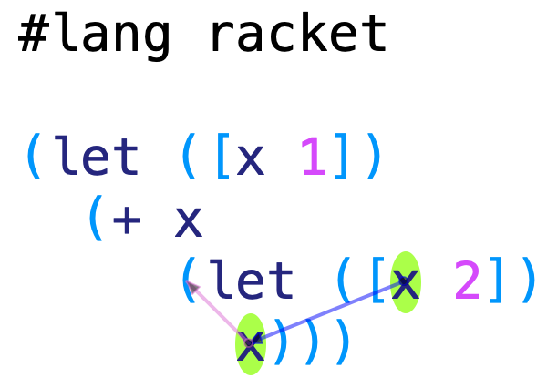
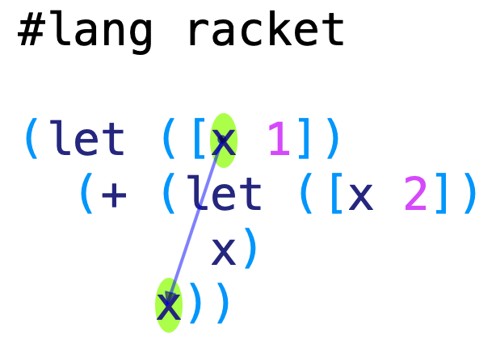

Do Now: Here are some examples of this new construct; what do you expect each one to produce?
{let1 {x 1}
{+ x x}}
{let1 {x 1}
{let1 {y 2}
{+ x y}}}
{let1 {x 1}
{let1 {y 2}
{let1 {x 3}
{+ x y}}}}
{let1 {x 1}
{+ x
{let1 {x 2} x}}}
{let1 {x 1}
{+ {let1 {x 2} x}
x}}
x
Do Now: Oh, did you notice something? None of the above programs is syntactically legal! Why?
It’s because there is no syntax yet for variables. Our syntax permits us to bind variables but not to use them. So we have to fix that:
<expr> ::= <num>
| {+ <expr> <expr>}
| {let1 {<var> <expr>} <expr>}
| <var>
Now the above terms are all syntactically valid, so we can go back to the question of what they should evaluate to.
The first two programs are pretty obvious:
{let1 {x 1}
{+ x x}}
should evaluate to 2, and
{let1 {x 1}
{let1 {y 2}
{+ x y}}}
should evaluate to 3.
How about this program?
{let1 {x 1}
{let1 {y 2}
{let1 {x 3}
{+ x y}}}}
Here we see the advantage of the parenthetical notation. In a more conventional syntax, this might correspond to
x = 1
y = 2
x = 3
x + y
where any number of things could happen: we might have two different x’s; we might have an x bound and then modified; and in some languages, an introduction of x could be “lifted” so that it’s no longer clear which x is most recent. With our parenthetical syntax, though, it’s pretty clear what scopes we want. To determine the value, we can rely on our old friend, substitution. However, when we substitute the outer x, we expect that to stop at the point where the inner x begins: that is, the inner x shadows the outer one. Hence, the result should be 5.
Do Now: The example above is uninteresting in that the outer x never sees any use. What kind of program might we write that has two let bindings of x that lets us clearly see that there are two x’s?
That’s what this program shows:
{let1 {x 1}
{+ x
{let1 {x 2} x}}}
It seems fairly clear that the left x in the addition should be 1, while x in the right expression should be shadowed and hence should evaluate to 2. The sum should therefore be 3. Incidentally, DrRacket is useful in such cases, because we can write an equivalent expression in #lang racket—
(let ([x 1])
(+ x
(let ([x 2])
x)))
—and hover over the last x, and DrRacket (for Racket, which represents a fairly ideal form of SMoL) will automatically draw a blue arrow showing where the variable is bound:

Now for a more complex example:
{let1 {x 1}
{+ {let1 {x 2} x}
x}}
Here, it’s especially useful to turn to substitution to determine the answer. Again, it seems clear that x in the left expression is shadowed and hence should be 2. The big question, of course, is what about the x on the right hand side of the addition (i.e., on the last line)?
Here, again, conventional textual syntax is fraught with ambiguity: is
x = 2
on the left a binding of a new x or a modification of the outer x? Those are two very different things! But with our syntax it’s much clearer that it should be the former, not the latter. Thus, by substitution, the outer x is replaced by 1, giving
{+ {let1 {x 2} x}
1}
in which we perform one more substitution, producing
{+ 2
1}
and hence 3. This time, DrRacket is especially useful confirmation:

That leaves just one program:
x
Because x is not bound anywhere, this is just a syntax error.